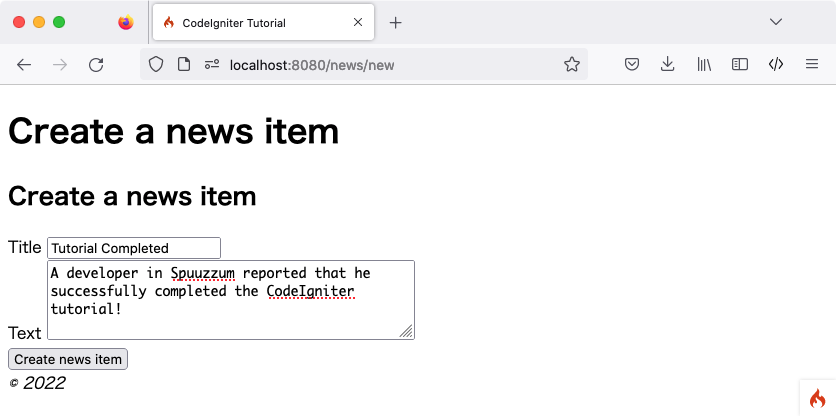
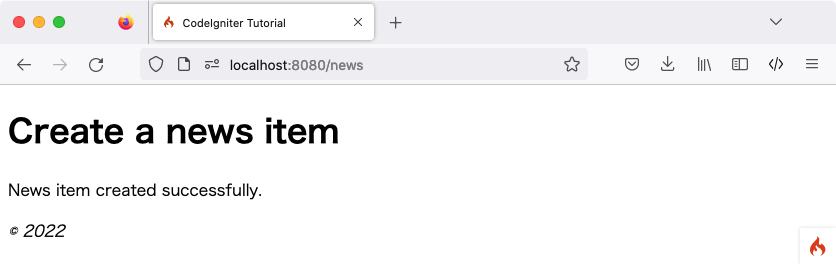

Membuat Item Berita
Anda sekarang tahu bagaimana Anda dapat membaca data dari database menggunakan CodeIgniter, tetapi Anda belum menulis informasi apa pun ke database. Pada bagian ini, Anda akan memperluas controller berita dan model yang dibuat sebelumnya untuk menyertakan fungsionalitas ini.
Mengaktifkan Filter CSRF
Sebelum membuat formulir, mari kita aktifkan perlindungan CSRF.
Buka file app/Config/Filters.php dan perbarui properti $methods seperti berikut:
<?php
namespace Config;
use CodeIgniter\Config\BaseConfig;
class Filters extends BaseConfig
{
// ...
public array $methods = [
'POST' => ['csrf'],
];
// ...
}
Ini mengkonfigurasi filter CSRF untuk diaktifkan untuk semua permintaan POST. Anda dapat membaca lebih lanjut tentang perlindungan CSRF di library Keamanan.
Peringatan
Secara umum, jika Anda menggunakan filter $methods, Anda harus menonaktifkan Auto Routing (Legacy)
karena Auto Routing (Legacy) mengizinkan metode HTTP apa pun untuk mengakses controller.
Mengakses controller dengan metode yang tidak Anda harapkan dapat melewati filter.
Menambahkan Aturan Routing
Sebelum Anda dapat mulai menambahkan item berita ke aplikasi CodeIgniter Anda, Anda harus menambahkan aturan tambahan ke file app/Config/Routes.php. Pastikan file Anda berisi yang berikut:
<?php
// ...
use App\Controllers\News;
use App\Controllers\Pages;
$routes->get('news', [News::class, 'index']);
$routes->get('news/new', [News::class, 'new']); // Add this line
$routes->post('news', [News::class, 'create']); // Add this line
$routes->get('news/(:segment)', [News::class, 'show']);
$routes->get('pages', [Pages::class, 'index']);
$routes->get('(:segment)', [Pages::class, 'view']);
Direktif route untuk 'news/new' ditempatkan sebelum direktif untuk 'news/(:segment)' untuk memastikan bahwa formulir untuk membuat item berita ditampilkan.
Baris $routes->post() mendefinisikan router untuk permintaan POST. Ini hanya cocok
dengan permintaan POST ke jalur URI /news, dan memetakan ke metode create() dari
class News.
Anda dapat membaca lebih lanjut tentang berbagai jenis routing di Setting Routing Rules.
Membuat Formulir
Membuat File View news/create
Untuk memasukkan data ke dalam database, Anda perlu membuat formulir tempat Anda dapat memasukkan informasi yang akan disimpan. Ini berarti Anda akan membutuhkan formulir dengan dua bidang, satu untuk judul dan satu untuk teks. Anda akan mendapatkan slug dari judul kita di model.
Buat view baru di app/Views/news/create.php:
<h2><?= esc($title) ?></h2>
<?= session()->getFlashdata('error') ?>
<?= validation_list_errors() ?>
<form action="/news" method="post">
<?= csrf_field() ?>
<label for="title">Title</label>
<input type="input" name="title" value="<?= set_value('title') ?>">
<br>
<label for="body">Text</label>
<textarea name="body" cols="45" rows="4"><?= set_value('body') ?></textarea>
<br>
<input type="submit" name="submit" value="Create news item">
</form>
Mungkin hanya ada empat hal di sini yang terlihat asing.
Fungsi session() digunakan untuk mendapatkan objek Session,
dan session()->getFlashdata('error') digunakan untuk menampilkan kesalahan terkait perlindungan CSRF
kepada pengguna. Namun, secara default, jika pemeriksaan validasi CSRF gagal, pengecualian akan dilemparkan,
sehingga belum berfungsi. Lihat Redirection on Failure untuk informasi lebih lanjut.
Fungsi validation_list_errors() yang disediakan oleh Form Helper
digunakan untuk melaporkan kesalahan terkait validasi formulir.
Fungsi csrf_field() membuat input tersembunyi dengan token CSRF yang membantu melindungi dari beberapa serangan umum.
Fungsi set_value() yang disediakan oleh Form Helper digunakan untuk menampilkan
data input lama ketika terjadi kesalahan.
News Controller
Kembali ke controller News Anda.
Menambahkan News::new() untuk Menampilkan Formulir
Pertama, buat metode untuk menampilkan formulir HTML yang telah Anda buat.
<?php
namespace App\Controllers;
use App\Models\NewsModel;
use CodeIgniter\Exceptions\PageNotFoundException;
class News extends BaseController
{
// ...
public function new()
{
helper('form');
return view('templates/header', ['title' => 'Create a news item'])
. view('news/create')
. view('templates/footer');
}
}
Kita memuat Form helper dengan
fungsi helper(). Sebagian besar fungsi helper memerlukan helper untuk
dimuat sebelum digunakan.
Kemudian ia mengembalikan view formulir yang dibuat.
Menambahkan News::create() untuk Membuat Item Berita
Selanjutnya, buat metode untuk membuat item berita dari data yang dikirimkan.
Anda akan melakukan tiga hal di sini:
memeriksa apakah data yang dikirimkan melewati aturan validasi.
menyimpan item berita ke database.
mengembalikan halaman sukses.
<?php
namespace App\Controllers;
use App\Models\NewsModel;
use CodeIgniter\Exceptions\PageNotFoundException;
class News extends BaseController
{
// ...
public function create()
{
helper('form');
$data = $this->request->getPost(['title', 'body']);
// Checks whether the submitted data passed the validation rules.
if (! $this->validateData($data, [
'title' => 'required|max_length[255]|min_length[3]',
'body' => 'required|max_length[5000]|min_length[10]',
])) {
// The validation fails, so returns the form.
return $this->new();
}
// Gets the validated data.
$post = $this->validator->getValidated();
$model = model(NewsModel::class);
$model->save([
'title' => $post['title'],
'slug' => url_title($post['title'], '-', true),
'body' => $post['body'],
]);
return view('templates/header', ['title' => 'Create a news item'])
. view('news/success')
. view('templates/footer');
}
}
Kode di atas menambahkan banyak fungsionalitas.
Mengambil Data
Pertama, kita menggunakan objek IncomingRequest
$this->request, yang diatur di controller oleh framework.
Kita mendapatkan item yang diperlukan dari data POST oleh pengguna dan mengaturnya di
variabel $data.
Memvalidasi Data
Selanjutnya, Anda akan menggunakan fungsi helper yang disediakan Controller validateData() untuk memvalidasi data yang dikirimkan. Dalam kasus ini, bidang judul dan isi diperlukan dan dalam panjang tertentu.
CodeIgniter memiliki library validasi yang kuat seperti yang ditunjukkan di atas. Anda dapat membaca lebih lanjut tentang library Validasi.
Jika validasi gagal, kita memanggil metode new() yang baru saja Anda buat dan mengembalikan
formulir HTML.
Menyimpan Item Berita
Jika validasi melewati semua aturan, kita mendapatkan data yang divalidasi oleh
$this->validator->getValidated() dan
mengaturnya dalam variabel $post.
NewsModel dimuat dan dipanggil. Ini menangani penerusan item berita
ke dalam model. Metode save() menangani penyisipan atau pembaruan
catatan secara otomatis, berdasarkan apakah ia menemukan kunci array yang cocok dengan primary
key.
Ini berisi fungsi baru url_title(). Fungsi ini -
disediakan oleh URL helper - memangkas
string yang Anda berikan, mengganti semua spasi dengan tanda hubung (-) dan memastikan
semuanya dalam karakter huruf kecil. Ini memberi Anda slug yang bagus,
sempurna untuk membuat URI.
Mengembalikan Halaman Sukses
Setelah ini, file view dimuat dan dikembalikan untuk menampilkan pesan sukses. Buat view di app/Views/news/success.php dan tulis pesan sukses.
Ini bisa sesederhana:
<p>Item berita berhasil dibuat.</p>
Pembaruan NewsModel
Satu-satunya hal yang tersisa adalah memastikan bahwa model Anda diatur
untuk memungkinkan data disimpan dengan benar. Metode save() yang
digunakan akan menentukan apakah informasi harus disisipkan
atau jika baris sudah ada dan harus diperbarui, berdasarkan keberadaan
primary key. Dalam kasus ini, tidak ada bidang id yang diteruskan ke sana,
sehingga akan menyisipkan baris baru ke dalam tabelnya, news.
Namun, secara default metode insert dan update di Model
tidak akan benar-benar menyimpan data apa pun karena tidak tahu bidang apa yang
aman untuk diperbarui. Edit NewsModel untuk memberikannya daftar bidang yang dapat diperbarui
dalam properti $allowedFields.
<?php
namespace App\Models;
use CodeIgniter\Model;
class NewsModel extends Model
{
protected $table = 'news';
protected $allowedFields = ['title', 'slug', 'body'];
}
Properti baru ini sekarang berisi bidang-bidang yang kita izinkan untuk disimpan ke
database. Perhatikan bahwa kita menghilangkan id? Itu karena Anda hampir
tidak pernah perlu melakukannya, karena itu adalah bidang auto-incrementing di database.
Ini membantu melindungi dari Kerentanan Penugasan Massal. Jika model Anda
menangani stempel waktu Anda, Anda juga akan menghilangkannya.
Membuat Item Berita
Sekarang arahkan browser Anda ke lingkungan pengembangan lokal tempat Anda menginstal CodeIgniter dan tambahkan /news/new ke URL. Tambahkan beberapa berita dan lihat halaman-halaman berbeda yang Anda buat.
 {kind=link}
{kind=link}
Selamat
Anda baru saja menyelesaikan aplikasi CodeIgniter4 pertama Anda!
Diagram di bawah ini menunjukkan folder app proyek Anda, dengan semua file yang Anda buat atau modifikasi.
app/
├── Config
│ ├── Filters.php (Dimodifikasi)
│ └── Routes.php (Dimodifikasi)
├── Controllers
│ ├── News.php
│ └── Pages.php
├── Models
│ └── NewsModel.php
└── Views
├── news
│ ├── create.php
│ ├── index.php
│ ├── success.php
│ └── view.php
├── pages
│ ├── about.php
│ └── home.php
└── templates
├── footer.php
└── header.php